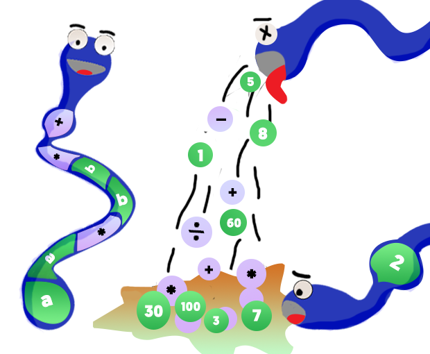

Home
About
Infix to PostFix
Inorder Traversal
Get Started
×
Home
About
Infix to PostFix
BST - Inorder Traversal
A Better and Easier way to Learn, the concept of Stack Deeply
Learn by Visualizting how Stack Convert Infix Expressions into PostFix Expressions and How BST Depth First Triversal works.
Get Started
Project By:
Noor Muhammad - CS171029
Roha Sabir - CS171007
